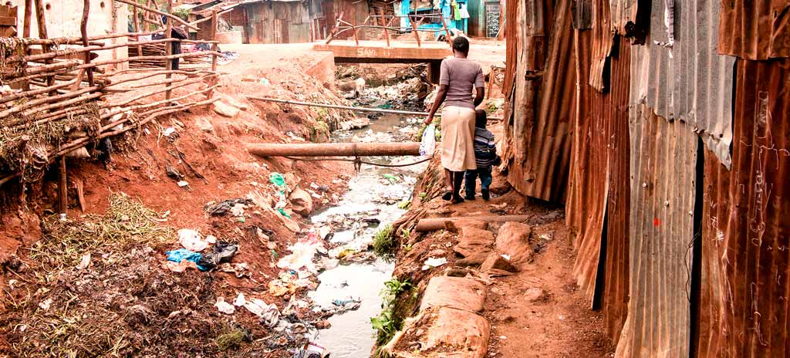
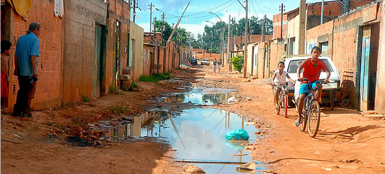

Desafios à discriminação de minorias étnicas marginalizadas e expostas a danos ambientais por degradações
Marginalização: uma tríade cruel
ㅤㅤNO livro “Quarto de desejo“, de Carolina de Jesus, retrata o cotidiano marginalizado. Por sua inteireza com a
verdade, percebe-se essa obra representante do coletivo empobrecido do povo brasileiro faminto que emerge sob os
escombros e sem cidadania. Em geral, muitos povos desapropriados migram de seus locais de origem, com perda
indenitária somada a ausência de ações governamentais.
ㅤㅤNessa perspectiva, comunidades indígenas, quilombolas e outras minorias étnicas frequentemente residem
em áreas suscetíveis à degradação ambiental, como regiões de exploração mineral, extração ilegal de madeira e
construção de grandes obras. Uma pesquisa feita pelo Instituto Brasileiro de Geografia e Estatística, aponta que
moradores pretos ou pardos têm 2,5 vezes mais chances de estar localizados nessas áreas do que moradores
brancos. A sobreposição de fatores como raça, etnia e classe social cria uma teia complexa de desvantagens que
limita o acesso a recursos, oportunidades e justiça ambiental.
ㅤㅤEm segunda instância, essa discriminação étnica racial se configura um obstáculo ao acesso à justiça
ambiental. Esses grupos lutam para serem descobertos alguns direitos reconhecidos pelos outros. Isso vai de encontro
com o que é preconizado na Constituição Federal de 1988, que é dever do Estado manter a igualdade com todo o
povo, sem distinções.
ㅤㅤEm paralelo, A perda indenitária se torna ainda mais complexa quando se trata de comunidades
marginalizadas. O acesso à justiça é muitas vezes dificultado pela falta de recursos financeiros, pela falta de
conhecimento sobre seus direitos e pela dificuldade de acesso aos órgãos competentes. Uma Pesquisa realizada pela
Fundação Getúlio Vargas em 2021 aponta que apenas 38% dos brasileiros sabem como acessar a justiça. Entre as
pessoas com menor grau de instrução, esse índice cai para 22%. O que aponta o quanto essas comunidades estão
em desvantagens.
ㅤㅤ Infere-se, portanto, essas populações o desconhecimento dos direitos somado a essas regiões em processo
de degradação produzem um aumento gradual na marginalidade social. Diante disso, cabe ao terceiro setor e ao
Mistério do Meio Ambiente implementarem políticas inclusivas que assegurem os direitos dessas populações.
Ademais, urge ao Ministério dos Direitos Humanos e da Cidadania e o Ministério do Meio Ambiente buscar ações de
proteção a essas comunidades para prevenir danos futuros, dessa forma o governo e as instituições oportunizar a
justiça social a esses povos.
Autores da redação: Luiz Henrique Viana Rocha, Luna Porto Sepúlveda e Ryan Ladeia Nascimento.

